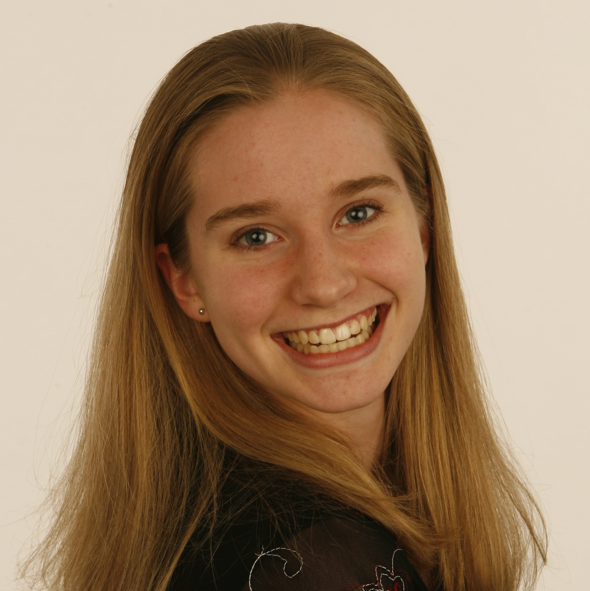

Katja Bego is currently a junior at Wellesley College, majoring in economics and cognitive science with a concentration in computer science. She is originally from Amsterdam, the Netherlands, but really enjoys the Boston Area. She was mostly interested in taking HFID to learn more about the practical applications of interaction design and to experience Olin’s project based teaching. In her spare time, she enjoys soccer (football!) both to watch and play, photography, tennis, reading and trying to organize her own cooking parties (especially when chocolate is involved).
Joe Gibson is a junior at Olin College, majoring in Engineering with a concentration in Computers. Hailing from the small town of Grand Junction, CO, Joe loves the outdoors, but often finds himself stuck inside on the computer. Joe decided to take HFID to gain a better understanding of what separates the good from the bad in interface design. Joe has a wide range of interests outside of school work, including competitive foosball, hiking trails, reading literary masterpieces, watching the Denver Nuggets, and decorating cakes. He is not sure how he got involved in all of these random activites.

Molly Grossman is a senior at Olin College from Olney, MD. She is majoring in Electrical and Computer Engineering. She decided to take HFID in order to gain a better understanding of how interfaces work (or fail). Molly has enjoyed object-oriented coding for almost 10 years but had very little html and javascript experience (and no css experience) entering this class. Outside of schoolwork, she enjoys performing theater, dancing, and playing Celtic fiddle music. If you see someone on campus weilding a sword, it's probably Molly.
Mandy Korpusik is a senior at Olin College from Campbell, CA. Although she is majoring in Electrical and Computer Engineering, she is planning to pursue a Ph.D. in Computer Science next year. Mandy decided to take HFID because she is interested in improving the design of interfaces so that they are more user-friendly. She enjoys running, swimming, playing the piano, singing, reading novels, and spending time with friends (especially hosting dance parties in her suite and watching Murder, She Wrote).
Colby Sato grew up on the tropical island of Oahu, where he woke up each morning to a view of the pacific ocean rippling with ocean breezes. He has flown a long way to Needham, MA where he currently studies engineering with a concentration in bioengineering. He loves Orgo, is learning to program, and hopes to someday dedicate his time and efforts to solving big problems. He has studied Japanese for over six years, and in spring of 2013, he will study abroad in Kyoto, fulfilling his dream of living in the place he has heard so much about.